18. Application web MVC dans une architecture 3tier – Exemple 4, Postgres
18.1. La base de données Postgres
Dans cette version, nous allons installer la liste des personnes dans une table de base de données Postgres 8.x [http://www.postgres.org]. Dans ce qui suit, les copies d’écran proviennent du client EMS PostgreSQL Manager Lite [http://www.sqlmanager.net/fr/products/postgresql/manager], un client d’administration gratuit du SGBD Postgres.
La base de données s’appelle [dbpersonnes]. Elle contient une table [PERSONNES] :
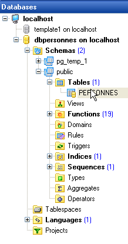
La table [PERSONNES] contiendra la liste des personnes gérée par l’application web. Elle a été construite avec les ordres SQL suivants :
Nous n’insistons pas sur cette table qui est analogue à la table [PERSONNES] de type Firebird étudiée précédemment. On notera cependant que les noms des colonnes et des tables sont entre guillemets. Par ailleurs, ces noms sont sensibles à la casse. Il est possible que ce mode de fonctionnement de Postgres 8.x soit configurable. Je n’ai pas creusé la question.
La table [PERSONNES] pourrait avoir le contenu suivant :

Outre la table [PERSONNES], la base [dbpersonnes] a, un objet appelé séquence et nommé [SEQ_ID]. Ce générateur délivre des nombres entiers successifs que nous utiliserons pour donner sa valeur à la clé primaire [ID] de la classe [PERSONNES]. Prenons un exemple pour illustrer son fonctionnement :
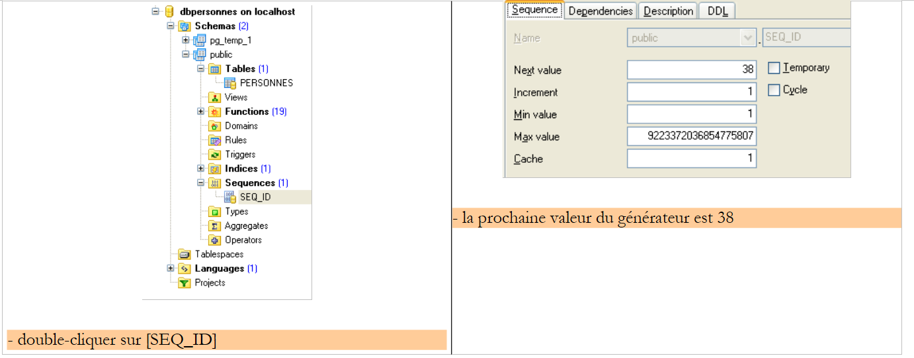 |
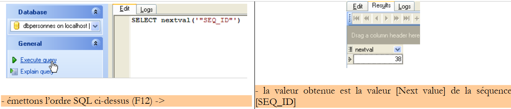 |
On peut constater que la valeur [Next value] de la séquence [SEQ_ID] a changé (double-clic dessus + F5 pour rafraîchir) :
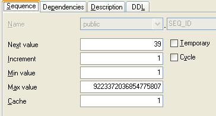 |
L’ordre SQL
permet donc d’avoir la valeur suivante de la séquence [SEQ_ID]. Nous l’utiliserons dans le fichier [personnes-postgres.xml] qui rassemble les ordres SQL émis sur le SGBD.
18.2. Le projet Eclipse des couches [dao] et [service]
Pour développer les couches [dao] et [service] de notre application avec la base de données Postgres 8.x, nous utiliserons le projet Eclipse [spring-mvc-39] suivant :
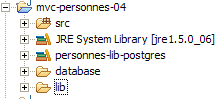
Le projet est un simple projet Java, pas un projet web Tomcat.
Dossier [src]
Ce dossier contient les codes source des couches [dao] et [service] :
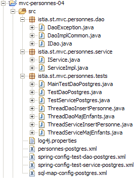
Tous les fichiers ayant [postgres] dans leur nom ont pu subir ou non une modfication vis à vis de la version Firebird. Dans ce qui suit, nous décrivons les fichiers modifiés.
Dossier [database]
Ce dossier contient le script de création de la base de données Postgres des personnes :
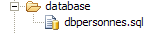
Dossier [lib]
Ce dossier contient les archives nécessaires à l’application :
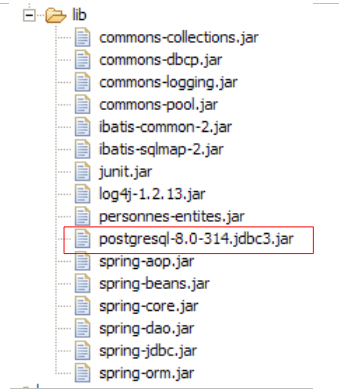 |
On notera la présence du pilote jdbc du SGBD Postgres 8.x. Toutes ces archives font partie du Classpath du projet Eclipse.
18.3. La couche [dao]
La couche [dao] est la suivante :

Nous ne présentons que ce qui change vis à vis de la version [Firebird].
Le fichier de mapping [personne-postgres.xml] est le suivant :
<?xml version="1.0" encoding="UTF-8" ?>
<!DOCTYPE sqlMap
PUBLIC "-//iBATIS.com//DTD SQL Map 2.0//EN"
"http://www.ibatis.com/dtd/sql-map-2.dtd">
<!-- attention - Postgresql 8 demande l'orthographe exacte des noms de colonnes
et des tables ainsi que des guillemets autour de ces noms -->
<sqlMap>
<!-- alias classe [Personne] -->
<typeAlias alias="Personne.classe"
type="istia.st.mvc.personnes.entites.Personne"/>
<!-- mapping table [PERSONNES] - objet [Personne] -->
<resultMap id="Personne.map"
class="istia.st.mvc.personnes.entites.Personne">
<result property="id" column="ID" />
<result property="version" column="VERSION" />
<result property="nom" column="NOM"/>
<result property="prenom" column="PRENOM"/>
<result property="dateNaissance" column="DATENAISSANCE"/>
<result property="marie" column="MARIE"/>
<result property="nbEnfants" column="NBENFANTS"/>
</resultMap>
<!-- liste de toutes les personnes -->
<select id="Personne.getAll" resultMap="Personne.map" > select "ID",
"VERSION", "NOM", "PRENOM", "DATENAISSANCE", "MARIE", "NBENFANTS" FROM
"PERSONNES"</select>
<!-- obtenir une personne en particulier -->
<select id="Personne.getOne" resultMap="Personne.map" >select "ID",
"VERSION", "NOM", "PRENOM", "DATENAISSANCE", "MARIE", "NBENFANTS" FROM
"PERSONNES" WHERE "ID"=#value#</select>
<!-- ajouter une personne -->
<insert id="Personne.insertOne" parameterClass="Personne.classe">
<selectKey keyProperty="id">
SELECT nextval('"SEQ_ID"') as value
</selectKey>
insert into "PERSONNES"("ID", "VERSION",
"NOM", "PRENOM", "DATENAISSANCE", "MARIE", "NBENFANTS") VALUES(#id#,
#version#, #nom#, #prenom#, #dateNaissance#, #marie#, #nbEnfants#)
</insert>
<!-- mettre à jour une personne -->
<update id="Personne.updateOne" parameterClass="Personne.classe"> update
"PERSONNES" set "VERSION"=#version#+1, "NOM"=#nom#, "PRENOM"=#prenom#,
"DATENAISSANCE"=#dateNaissance#, "MARIE"=#marie#, "NBENFANTS"=#nbEnfants#
WHERE "ID"=#id# and "VERSION"=#version#</update>
<!-- supprimer une personne -->
<delete id="Personne.deleteOne" parameterClass="int"> delete FROM
"PERSONNES" WHERE "ID"=#value# </delete>
</sqlMap>
C’est le même contenu que [personnes-firebird.xml] aux détails près suivants :
- les noms des colonnes et des tables sont entre guillemets et ces noms sont sensibles à la casse
- l’ordre SQL " Personne.insertOne " a changé lignes 34-41. La façon de générer la clé primaire avec Postgres est différente de celle utilisée avec Firebird :
- ligne 36 : l’ordre SQL [SELECT nextval('"SEQ_ID"')] fournit la clé primaire. La syntaxe [as value] est obligatoire. [value] représente la clé obtenue. Cette valeur va être affectée au champ de l’objet [Personne] désigné par l’attribut [keyProperty] (line 35), ici le champ [id].
- les ordres SQL de la balise <insert> sont exécutés dans l’ordre où ils sont rencontrés. Donc le SELECT est fait avant l’INSERT. Au moment de l’opération d’insertion, le champ [id] de l’objet [Personne] aura donc été mis à jour par l’ordre SQL SELECT.
- lignes 38-40 : insertion de l’objet [Personne]
La classe d’implémentation [DaoImplCommon] de la couche [dao] est celle étudiée dans la version [Firebird].
La configuration de la couche [dao] a été adaptée au SGBD [Postgres]. Ainsi, le fichier de configuration [spring-config-test-dao-postgres.xml] est-il le suivant :
<?xml version="1.0" encoding="ISO_8859-1"?>
<!DOCTYPE beans SYSTEM "http://www.springframework.org/dtd/spring-beans.dtd">
<beans>
<!-- la source de donnéees DBCP -->
<bean id="dataSource" class="org.apache.commons.dbcp.BasicDataSource"
destroy-method="close">
<property name="driverClassName">
<value>org.postgresql.Driver</value>
</property>
<property name="url">
<value>jdbc:postgresql:dbpersonnes</value>
</property>
<property name="username">
<value>postgres</value>
</property>
<property name="password">
<value>postgres</value>
</property>
</bean>
<!-- SqlMapCllient -->
<bean id="sqlMapClient"
class="org.springframework.orm.ibatis.SqlMapClientFactoryBean">
<property name="dataSource">
<ref local="dataSource"/>
</property>
<property name="configLocation">
<value>classpath:sql-map-config-postgres.xml</value>
</property>
</bean>
<!-- la classes d'accè à la couche [dao] -->
<bean id="dao" class="istia.st.mvc.personnes.dao.DaoImplCommon">
<property name="sqlMapClient">
<ref local="sqlMapClient"/>
</property>
</bean>
</beans>
- lignes 5-19 : le bean [dataSource] désigne maintenant la base [Postgres] [dbpersonnes] dont l’administrateur est [postgres] avec le mot de passe [postgres]. Le lecteur modifiera cette configuration selon son propre environnement.
- ligne 31 : la classe [DaoImplCommon] est la classe d'implémentation de la couche [dao]
Ces modifications faites, on peut passer aux tests.
18.4. Les tests des couches [dao] et [service]
Les tests des couches [dao] et [service] sont les mêmes que pour la version [Firebird]. Lançons le SGBD Postgres puis les tests Eclipse. Les résultats obtenus sont les suivants :
 |
On constate que les tests ont été passés avec succès avec l'implémentation [DaoImplCommon]. Nous n'aurons pas à dériver cette classe comme il avait été nécessaire de le faire avec le SGBD [Firebird].
18.5. Tests de l’application [web]
Pour tester l’application web avec le SGBD [Postgres], nous construisons un projet Eclipse [mvc-personnes-04B] de façon analogue à celle utilisée pour construire le projet [mvc-personnes-03B] avec la base Firebird (cf paragraphe 17.7). Cependant, nous n'avons pas à recréer les archives [personnes-dao.jar] et [personnes-service.jar]. En effet, nous n'avons modifié aucune classe vis à vis du projet [mvc-personnes-03B]. Simplement l'archive [personnes-dao.jar] contient la classe [DaoImplFirebird] qui est devenue inutile.

Nous déployons le projet web [mvc-personnes-04B] au sein de Tomcat :
 | 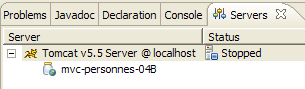 |
Nous sommes prêts pour les tests. Le contenu de la table [PERSONNES] est alors le suivant :

Tomcat est lancé. Avec un navigateur, nous demandons l’url [http://localhost:8080/mvc-personnes-04B] :
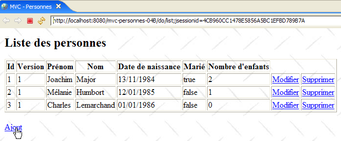
Nous ajoutons une nouvelle personne avec le lien [Ajout] :
 | 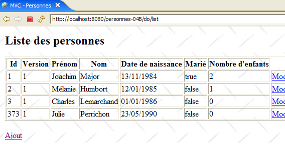 |
Nous vérifions l’ajout dans la base de données :

Le lecteur est invité à faire d’autres tests [modification, suppression].